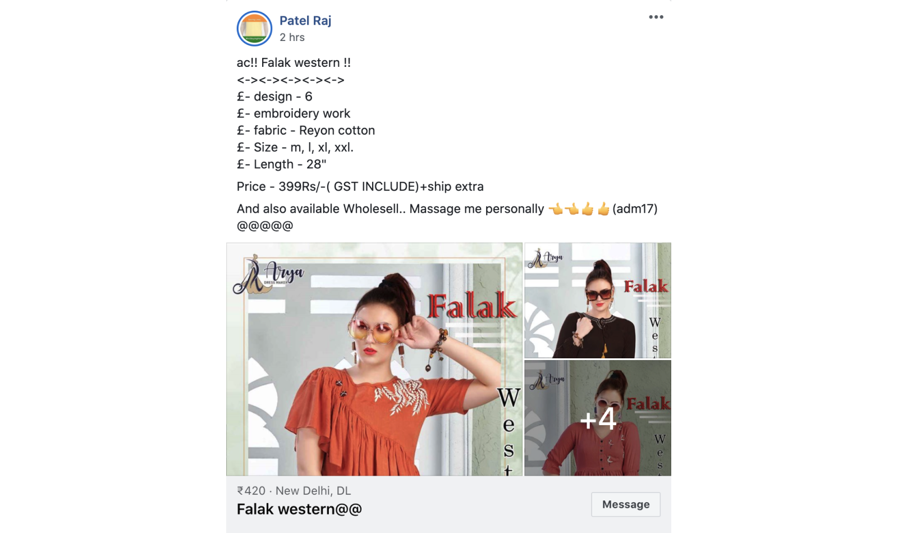

A social seller is someone who is domestically dropshipping products via popular social media platforms (i.e., Whatsapp, Facebook, Instagram, etc.). Social sellers have a lot of competition due to domestic dropshipping similar types of products within the same locality. What further saturates the market is the competition between the limited amount of resellers available, causing dropshippers to reuse the same images provided. With the large amount of competition they find it difficult to attract customers with their own brand and also show them that they are running a credible business. How might we help social sellers have unique and professional marketing material to help them stand out with similar competitors?
1. Understand how social sellers market their products
2. Understand what low-cost methods these merchants use to start advertising
Approach
The research process for this project consisted of user research regarding social sellers and how they conduct their business, as well as a competitive analysis of what tools they are using.
As the sole product designer on this team, I collaborated with the rest of the team to put together a plan to help further understand social sellers and how they conduct business and whether Shopify as a platform would be beneficial for them.
User Research - Understanding Social Sellers
To understand how social sellers connect with their customers I first signed up to all the popular groups on Facebook. Facebook is widely used for domestic dropshipping as social sellers find it easy to attract more people in their area as well as other states in their country.
Most social sellers use social media platforms to engage with their users by adding their contact information either a phone number to connect via Whatsapp, or directly through the social media platform. Looking at the examples, you can see how social sellers reuse the photos provided by the reseller. These users are also not tech savvy and find quick, low-budget solutions to help conduct their business.
After connecting with the researchers on my team, we conducted user interviews and discovered the biggest pain point for social sellers was standing out in a saturated market. Most of these social sellers were doing this part-time, but would like to still create their own brand identity without having to sacrifice the price of the product and what they earn. They had low-budget solutions which they would use such as editing the photo by adding their branding, such as a logo or a name they can contact.

Key Touchpoints
1. Social sellers are scrappy and they’re looking for new business opportunities. They need low cost tools to make things happen quick, easily and efficiently to help them overcome challenges they face on social media
2. The whole market is mobile first (Android holds 90% of the market in India)
3. Most of these sellers are not professional photographers, and cannot afford to hire photographers to help advertise their products. Simplifying this time can help reduce their time to go to market.
4. Social Sellers are resellers/dropshippers and sometimes do not have the products on hand to take pictures and rely on pictures from the manufacturer.
Competitive Analysis
I looked at the most popular background removal apps in India and across the globe, which helped me evaluate the process users go to edit their photos. As these users are not tech savvy, I focused on tools that made the background removal process quick and easy as well as the capability of adding their own branding. I looked at quite a few apps but the biggest pain point was either the automatic background removal tool was paid, or users had to use a brush to manually remove it. There are definitely many apps out there that help users create beautiful graphics, but what I found was automatic background removal was mostly through paid subscriptions. A few examples of apps I analyzd:
Canva
A very popular and powerful platform to create graphics. However they have a paid automatic background removal tool with a monthly or yearly subscription. Requires users to have a bit of design knowledge to ensure users are using the right colors that are not contrasting.
The benefit is they have a lot of features and templates users can use for free.
PicMonkey
Another powerful tool to help create graphics. Also have a paid automatic background removal tool that would require users to have a monthly or yearly subscription. Users can play with the editor, but cannot save the high quality images without a subscription.
Remove.bg
Free and works well, has a brush to remove or add excess. They do not have other features and this is only available on the web.
Background erase iOS app
Requires user to use a brush and manually remove background. Paid after a free trial.
Ideation - Brainstorming and Iteration
After understanding all the findings we decided to understand our users by creating a mobile first application that will help users create a brand identity even with similar products in the market. One of the key things we had to do was be able to help them quickly remove a background, which also gives them the advantage of putting their photos on e-commerce platforms like Amazon that require them to have a white background.
A lot of my designs initially were to incorporate all the basic necessities required when editing a picture and creating a graphic. One of the things we knew for social sellers is that they post on a variety of social platforms, and eventually also go to websites like Amazon, so for each platform it would be nice to have a canvas designated for that size so they do not have to crop and edit on their own. However, if a social seller had to create a custom size they would also be able to do that especially if we didn’t provide one.
Our prime feature was definitely going to be our automatic background removal, but we definitely needed other tools to help amplify their picture such as background color, stock photography, filters, etc.
Another thing we wanted to add were tutorials that would help the users who are not tech savvy to understand the app and the features we provided. We were aware there would be a language barrier and in the first MVP it would be difficult to translate our app into multiple languages, so the use of icons was necessary as well as a picture explanation.
Solution
Looking at the user research the understanding was we needed to create a mobile first application that was easy to use and can help social sellers go to market as quickly as possible. Hence, we further reiterated and brainstormed some of the features we had in the low-fi prototype and realized we had a short time frame (less than 2 weeks) to submit our app to test it in the market. This definitely impacted my design, and the time it took to make a good user experience so we had to cut down a lot of the features. Since we weren’t too confident in the product and who would use it, we did not want to associate it with Shopify and wanted to create something that would help us understand and engage with our users.
In the final solution we decided to keep the primary focus on a one-click background removal feature as that would turn into the biggest pain point for social sellers who are using pictures from commonly used resellers. Another thing we definitely wanted to add was an AI that would help suggest colors by analyzing that feature so they wouldn’t require a design background to get the best possible color. The other features we included were shadow, to help pop out the picture from the background as well as auto adjust that will help the image come to life. Undo and redo were a necessity as we did not want the user to start all over again if they made a mistake. This would make the app quick and easy to use and also keep the primary focus on the background removal.
To engage with our users I decided to also add an email field that would be optional for them to enter. This would allow us to email users when needing feedback and also help start a nurture campaign onto the Shopify platform when we were ready.
Results
1. Over 100K downloads on Google’s Playstore
2. 4.1 star rating on the Apple App Store, and 3.3 rating on Google Play Store
Common User Feedback
Users found the background removal process to be quick and easy and were very happy with the first launch. However, they would love to see more features to be added to help aid their business
Example of Reviews
Did our goal help reach our target audience to join Shopify?
No. With the way we marketed our tool, most merchants already on Shopify or who were planning to open an online store had a better time using our product especially when it came to uploading on platforms where a white background colour was required. Another factor was that our app did not associate with Shopify except if you looked very closely at the developer, which made it difficult for users not on our platform to associate with it.
Improvements
One of the few things we definitely would do is rebrand the tool to associate it with Shopify. Have more time to have a thought out process for the tools used, especially by adding a color picker, crop feature, etc.
Rebranding
This is currently an MVP where we launched to experiment and see the reaction and feedback we would get from our users. One thing I would do differently is find a way to help transition these users to Shopify and help them understand what our company is known for and how it might help them.